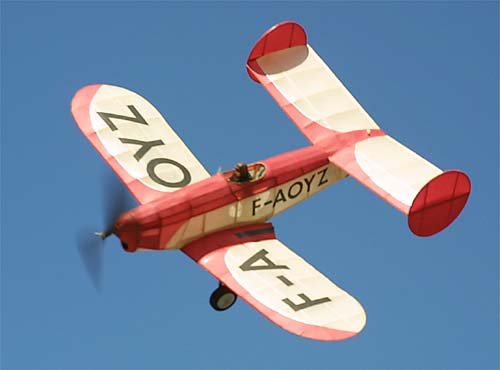
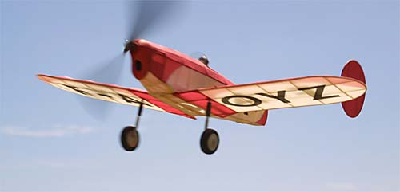

George Benson's 1936 Mauboussin
This tandem wing model is a great flyer, and really looks sharp. George enlarged it to 20" from a peanut plan.


return
Copyright 2001,
Thayer Syme
. All rights reserved